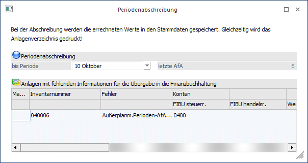
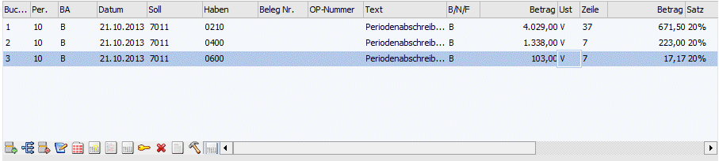
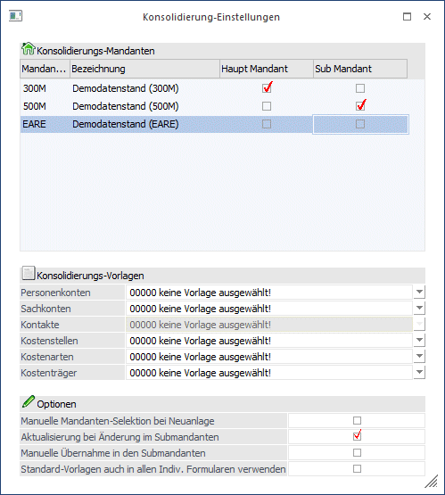
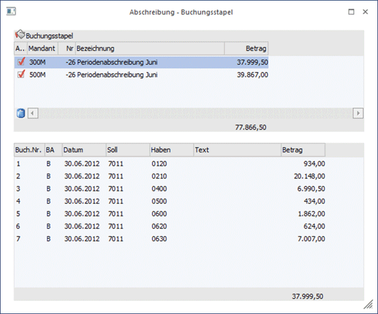
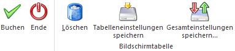

Unter Periodenabschreibung versteht man die regelmäßige Berücksichtigung der Abschreibung während des Wirtschaftsjahres (Monate, Quartale, ...) in der Erfolgsrechnung. Eine Periodenabschreibung wird auch für geringwertige Wirtschaftsgüter durchgeführt. Im Gegensatz dazu gibt es die Jahres-AfA, die am Jahresende berechnet und gebucht wird. Im Zuge der Jahresabschreibung werden sämtliche berücksichtigte Werte der Periodenabschreibung storniert.
Es kann wahlweise die steuerrechtliche oder handelsrechtliche Periodenabschreibung in die Finanzbuchhaltung übergeben werden. Die Entscheidung, welche Periodenabschreibung in die FIBU übergeben wird, wird im ANBU-Parameter Bereich Buchen unter Buchungsübergabe anhand des Radiobuttons "steuerrechtlich" oder "handelsrechtlich" vorgenommen.
Für den FIBU-Buchungsstapel der Periodenabschreibung kann der Buchungstext im ANBU-Parameter frei definiert werden. Ist im ANBU-Parameter kein eigener Buchungstext hinterlegt, wird "Perioden-AfA" als Buchungstext in den FIBU-Buchungsstapel eingetragen.
Im Anlagenjournal ist anhand des Textes ersichtlich, ob die steuerrechtliche oder handelsrechtliche Periodenabschreibung durchgeführt wurde.
Im Menüpunkt
1 Abschluss
1 Periodenabschreibung
kann dieser Programmpunkt aktiviert werden.

Ø bis Periode
Periode, bis zu der die Perioden-AfA berechnet und gebucht werden soll
ü Die Abschreibung erfolgt immer von der letzten Perioden-AfA bis zur eingetragenen Periode.
ü Bei der Periodenabschreibung werden die errechneten Werte in den Stammdaten gespeichert. Gleichzeitig werden das Anlagenverzeichnis und die Buchungsübergabe gedruckt.
ü Im ersten Jahr der Inbetriebnahme wird die Periodenabschreibung anhand der gesamten Jahres-AfA auf die tatsächlich genutzten Monate aufgeteilt berechnet.
Ø Letzte AfA
Der letzte Perioden-AfA-Lauf wird angezeigt.
Ø Anlagen mit fehlenden Informationen für die Übergabe in die Finanzbuchhaltung
In der Tabelle in der unteren Fensterhälfte werden nach einem fehlerhaften Perioden-AfA-Lauf die Anlagegüter angedruckt, bei denen noch Daten eingetragen werden müssen, um einen korrekten Perioden-AfA-Lauf zu ermöglichen. Die hier nacherfassten Werte werden automatisch in den Anlagenstamm zurückgeschrieben.
Beispiel eines Perioden-AfA-Buchungsstapels
In der FIBU wird im Buchen-Dialog-Stapel über den Laden-Button der Buchungsstapel geladen

Achtung
Die Periodenabschreibung des zuletzt abgeschriebenen Monats kann beliebig oft durchgeführt werden. Bei einer wiederholten Periodenabschreibung werden die Differenzen zur letzten Perioden-AfA ermittelt und in die FIBU übergeben.
Achten Sie darauf, dass gültige Konten, bzw. bei Buchen der Kosten über die FIBU, die entsprechenden Kostenrechnungsinformationen hinterlegt wurden!
Nach der Durchführung der Jahresabschreibung kann für das Wirtschaftsjahr keine Periodenabschreibung mehr berechnet werden!
Für jede Periode wird in der FIBU ein eigener Buchungsstapel erstellt. Diese können dann pro Periode verbucht werden.
Ø Mandantenselektion
Über die Mandantenselektion können mehrere Submandanten ausgewählt werden. Es wird für alle ausgewählten Mandanten die Periodenabschreibung durchgeführt und der Buchungsstapel in der Finanzbuchhaltung automatisch verbucht.
Die Submandanten müssen zuvor im WinLine Start über den Menüpunkt
1 Optionen
1 Konsolidierung
1 Einstellungen
als Submandant zu diesem Hauptmandant aktiviert sein.

Wurde der Mandantenselektions-Button in der Periodenabschreibung gedrückt, öffnet sich das Fenster Konsolidierung. In diesem Fenster können die abzuschreibenden Mandanten ausgewählt werden.
Das Bestätigen der Konsolidierung mit OK oder F5 führt die Periodenabschreibung dieser Mandanten aus und öffnet das Fenster Abschreibung-Buchungsstapel, in dem die erstellten Buchungsstapel in einer Tabelle angezeigt werden. In einer zweiten Tabelle werden die Buchungszeilen des ausgewählten Buchungsstapels aufgelistet.

Ein Doppelklick in eine Buchungszeile öffnet das Anlagenverzeichnis mit dem FIBU-Konto dieser Buchung.
Durch den Klick auf die Inventarnummer im Anlagenverzeichnis öffnet sich das Anlagenstammblatt.
Buttons

Ø Buchen
Über den Buchen-Button werden für die ausgewählten Mandanten die Buchungsstapel erstellt, sofort automatisch in der Finanzbuchhaltung verbucht und anschließend gelöscht.
Die Buchungsübergabe und die Anlagenverzeichnisse werden für jeden Mandanten separat in den Spooler oder auf den Drucker ausgegeben.
Ø Ende
Das Fenster wird geschlossen.
Ø Löschen
Über den Löschen-Button können einzelne Buchungsstapel storniert werden. Dabei wird der Buchungsstapel wieder gelöscht und die Periodenabschreibung dieses Mandanten rückgängig gemacht.
Achtung
Die Checkbox "Auswahl" hat für die Funktion des Löschens keine Bedeutung. Die Auswahl ist nur für die Verbuchung der Buchungsstapel gültig. Soll ein Buchungsstapel gelöscht werden, dann muss einmal in diese obere Tabellenzeile geklickt werden um sie zu aktivieren. Es wird der Buchungsstapel gelöscht, dessen Buchungen in der unteren Tabelle aufgelistet werden.
Ø Tabelleneinstellungen speichern
Die Spalten einer Tabelle können grundsätzlich an beliebige Positionen verschoben, bzw. in der Breite entsprechend angepasst werden. Durch Anwahl des Buttons "Tabelleneinstellungen speichern" werden die Einstellungen benutzerspezifisch gespeichert und bei dem nächsten Aufruf des Programmpunktes wieder vorgeschlagen.
Ø Gesamteinstellungen speichern
Im Gegensatz zu "Tabelleneinstellungen speichern" können mit "Gesamteinstellungen speichern" mehrere Tabellenaufbauten gespeichert und nach Wunsch geladen werden. Zusätzlich werden Sonderfunktionen der Tabelle (z.B. "Spalte gruppieren") ebenfalls bei der Speicherung bedacht.